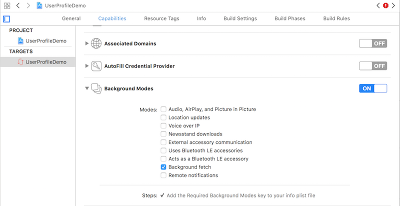
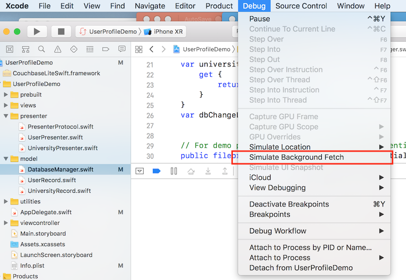
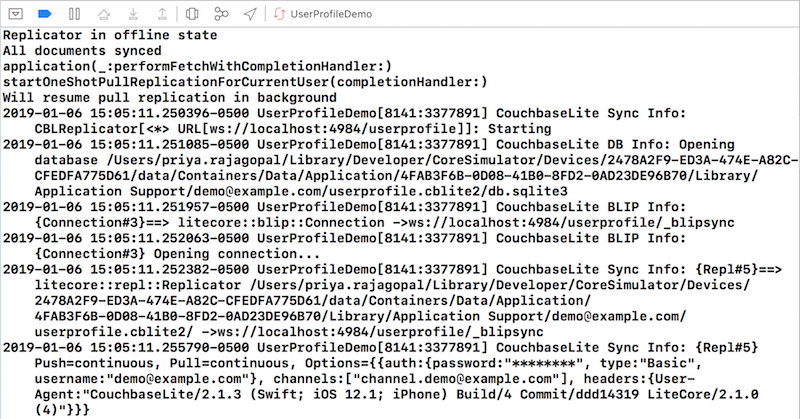
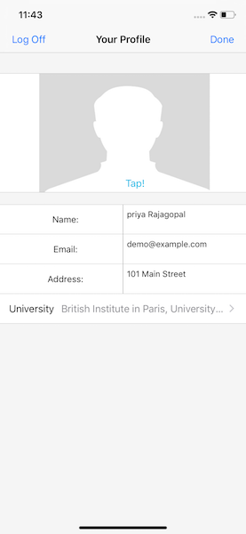

User Profile Sample: Background App Refresh
Introduction
The ability for a mobile app to run in the background is an important element of the life cycle of a mobile application. The ability to sync data while in the background would be useful in several scenarios. Background support is platform specific and is hence not built into Couchbase Lite. However, one can easily leverage the various platform specific backgrounding capabilities to perform data sync over Couchbase Mobile.
This tutorial will demonstrate how to -
-
Configure your iOS app for Background Fetch support
-
Setup your app to do a one-shot sync with Couchbase Sync Gateway while in the background
We will be usiing a Swift App as an example of a Couchbase Lite enabled client.
You can learn more about the Sync Gateway here
Prerequisites
This tutorial assumes familiarity with building swift apps with Xcode and with Couchbase Lite.
-
You must have completed the "user profile" tutorial on sync. If you haven’t already done so, please complete the following tutorial first
-
Fundamentals of Sync using Couchbase Lite and Sync Gateway
-
-
iOS (Xcode 10+)
-
Download latest version from the Mac App Store
-
NOTE: If you are on an older version of Xcode that you must retain for your other development needs, you can make a copy of your existing version of Xcode and install Xcode 10. So you can have multiple versions of Xcode on your Mac.
-
-
git (Optional) This is required if you would prefer to pull the source code from GitHub repo.
-
Create a free github account if you don’t already have one
-
git can be downloaded from git-scm.org
-
-
curl HTTP client
-
You could use any HTTP client of your choice. But we will use curl in our tutorial. Download latest version from curl website
-
System Overview
We will be working with a simple "User Profile" app which we introduced in the Fundamentals Tutorial and extended to support data sync capabilities in the Sync Tutorial.
In this tutorial, we will be extending that app to support data sync when in the background.
The app does the following
-
Allows users to log in and create or update his/her user profile information. The user profile view is automatically updated everytime the profile information changes in the underlying database
-
The user profile information is synced with a remote Sync Gateway which then syncs it to other devices (subject to access control and routing configurations specified in the
sync function) -
When the app is woken up in the background, it does a one-shot replication with the remote Sync Gateway
App Installation
Fetching App Source Code
You have two options
Option 1 : Git Clone
-
Clone the backgroundfetch branch of the
User Profile Demoproject from GitHub. Type the following command in your terminalgit clone -b backgroundfetch https://github.com/couchbaselabs/userprofile-couchbase-mobile.git
Option 2 : Download .zip
-
Download the
User Profile Demoproject from here
Installing Couchbase Lite Framework
-
Next, we will download the Couchbase Lite 2.x framework. The Couchbase Lite iOS framework is distributed via Cocoapods, Carthage or you can download the pre-built framework. In our example, we will be downloading the pre-built version of the framework. For this, type the following in the command terminal
cd /path/to/UserProfileDemo/content/modules/userprofile/examples sh install_10.sh
let’s verify the installation
Sync Gateway 2.x Installation
Follow the steps outlined in the Sync Tutorial to install the Sync Gateway on localhost running in walrus mode.
Note that the walrus must is a development-only mode used for testing/demonstration purposes. It must never be used in production.
Now, let’s verify the installation
Try it Out
-
Open a browser and enter
http://localhost:4984in the address bar -
You should see a message similar one below
{"couchdb":"Welcome","vendor":{"name":"Couchbase Sync Gateway","version":"2.0"},"version":"Couchbase Sync Gateway/2.0.0(832;2d8a6c0)"}
Data Model
There are two documents - the "user profile" type document and "university" type document. We will use the same data model as discussed in data model section of the Sync tutorial.
Configuring App for Background App Refresh
iOS supports several backgrounding models. One such option is Background App Refresh. According to Apple docs, Background App Refresh lets your app run periodically in the background so that it can update its content. The iOS system uses its discretion to determine when to wake up and run your app, typically by learning your app usage over time. In other words, there is no guarantee that your app will have an opportunity to run in the background. Even when provided with the opportunity, the app gets a finite amount of time to run.
-
Open the "capabilities" tab in the UserProfileDemo.xcodeproj file. Note that "Background Fetch" is enabled under the "Background models" tab
 -
Open the AppDelegate.swift file and locate the
application:didFinishLaunchingWithOptions()function.func application(_ application: UIApplication, didFinishLaunchingWithOptions launchOptions: [UIApplicationLaunchOptionsKey: Any]?) -> Bool { // Override point for customization after application launch. self.loadLoginViewController() UIApplication.shared.setMinimumBackgroundFetchInterval(UIApplicationBackgroundFetchIntervalMinimum) return true } -
Here we specify the periodicity at which the app should be woken up. We use a value of UIApplicationBackgroundFetchIntervalMinimum which is the smallest fetch interval supported by the system
Implementing the Background Fetch callback
-
Open the AppDelegate.swift file and locate the
application:performFetchWithCompletionHandler()function. This callback function is invoked by the system everything the app is launched in the background.// Support for background fetch func application( _ application: UIApplication, performFetchWithCompletionHandler completionHandler: @escaping (UIBackgroundFetchResult) -> Void) { print(#function) // Do a one shot replication self.cbMgr.startOneShotPullReplicationForCurrentUser { (status) in completionHandler(.newData) (1) } }1 Invoke function on to do a one-shot replication with the Sync Gateway. Everytime the app is launched, all pending changes with the remote Sync Gateway will be synched up
Implementing the One-shot replication
Setting up the app for one-shot replication is very similar to continuous replication that was discussed in the Sync tutorial.
-
Open the DatabaseManager.swift file and locate the
startOneShotPullReplicationForCurrentUser()function.func startOneShotPullReplicationForCurrentUser(completionHandler:@escaping(_ doneStatus:Bool)->Void) { -
Let’s examine the replicator configuration
let dbUrl = remoteUrl.appendingPathComponent(kDBName) let config = ReplicatorConfiguration.init(database: db, target: URLEndpoint.init(url:dbUrl)) config.continuous = false (1) config.replicatorType = .pull (2) config.authenticator = BasicAuthenticator(username: user, password: password)1 The"continuous" mode is set to "false" in the Replicator configuration indicating that this is a one-shot replication. In one-shot mode, the replicator goes into idle state once all pending changes are synced 2 The "replicationType" is set to pull-only in the Replicator configuration indicating that the app will only pull changes from remote client when in the background.
The rest of the configuration is as in the continuous replication case.
Exercises
Before proceeding with the exercises in this section, complete the exercises in the Sync tutorial to verify that you can sync changes between the app and Sync Gateway with the app in the foreground.
In the following exercise, we will observe how changes made on Sync Gateway are fetched by the iOS app in the background
-
The app must be running in the simulator with the xcode debugger attached. This is important as we will use the xcode debugger for simulating background fetches.
-
Push the app in the simulator to the background. Typically you can do it with the Shift-Cmd-H key combination
-
Clear the debug console logs in xcode. This will make it easier to identify what goes on when the app is launched in the background
-
Open the command terminal and issue the following
curlcommand to get the user profile document on the Sync Gateway via GET Document REST APIcurl -X GET \ http://localhost:4985/userprofile/user::demo@example.com \ -H 'Accept: application/json' \ -H 'Cache-Control: no-cache' \ -H 'Content-Type: application/json' -
Your response should look something like the response below. The exact contents depends on the user profile that you provided via your mobile app.
{ "_attachments": { "blob_/image": { "content_type": "image/jpeg", "digest": "sha1-9OHO0QIk+kREiOaoMlrEg/jU4zU=", "length": 15110, "revpos": 1, "stub": true } }, "_id": "user::demo@example.com", "_rev": "1-0b9e3efa5ec1b1596564c4db34ba28d4e618f9c5", "address": "", "email": "demo@example.com", "image": { "@type": "blob", "content_type": "image/jpeg", "digest": "sha1-9OHO0QIk+kREiOaoMlrEg/jU4zU=", "length": 15110 }, "name": "", "type": "user" } -
In the command terminal, issue the following command to update the user profile document on the Sync Gateway via PUT Document REST API
curl -X PUT \ 'http://localhost:4985/userprofile/user::demo@example.com?rev=1-0b9e3efa5ec1b1596564c4db34ba28d4e618f9c5' \ -H 'Accept: application/json' \ -H 'Cache-Control: no-cache' \ -H 'Content-Type: application/json' \ -d '{ "address": "101 Main Street", "email": "demo@example.com", "image": { "@type": "blob", "content_type": "image/jpeg", "digest": "sha1-S8asPSgzA+F+fp8/2DdIy4K+0U8=", "length": 14989 }, "name": "priya Rajagopal", "type": "user", "university": "British Institute in Paris, University of London" }' -
Launch the iOS app in the background. You will simulate this through the Xcode Debug menu to "Simulate Background Fetch"
 -
Observe the console logs. You would see a set of messages indicating that the app has pulled the latest changes from the Sync Gateway
 -
Stop the Sync Gateway
-
Launch the app in the foreground. The user profile doc that was synced in the background will be displayed.
